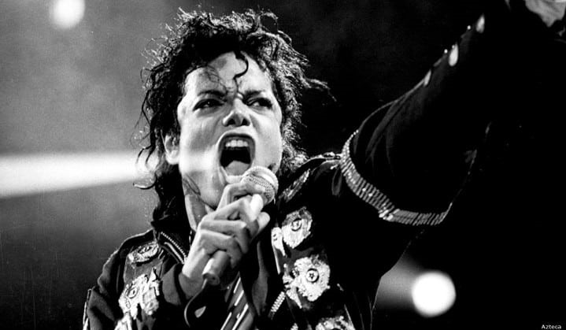

Tribute to Michael Jackson

“To give someone a piece of your heart, is worth more than all the wealth in the world.”
Timeline
-
August 29, 1958. Michael Joseph Jackson was born in Gary, Indiana. He was the eighth of ten children in the Jackson family, a working-class African-American family living in a two-bedroom house on Jackson Street.
- 1964.Jackson made his professional debut in with his elder brothers Jackie, Tito, Jermaine, and Marlon as a member of the Jackson 5.
- 1979.He became a solo star with his album "Off the Wall"
- 1982. Jackson's sixth album, Thriller, was released. It was the best-selling album worldwide in 1983, and became the best-selling album of all time in the US and the best-selling album of all time worldwide, selling an estimated 70 million
copies.